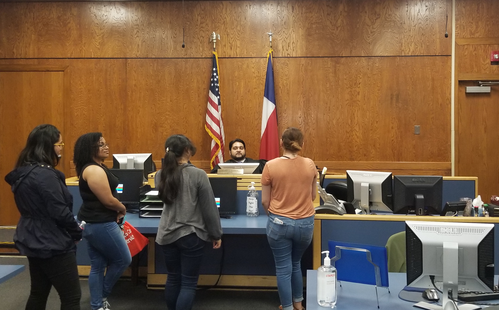

OVERVIEW:
STRATEGIC
DIRECTION
2023
GOALS
Strategic section: SAFETY
GOALS OF AUSTIN MUNICIPAL COURT
-

Provide prompt, effective, efficient and impartial administration of justice and processing of all cases filed wiht the Court
-

Provide accurate, readily accessible information to the public and to all individuals participating in Municipal Court cases
-
Minimize jail commitments for non-payment of fines whenever effective alternatives are available
-

Make alternative sentencing options available when appropriate and ensure sentencing is consistent and restricts jail commitments
-

Minimize the issuance of warrants whenever alternatives are available and through alternative sentences
-

Minimize unintended consequences of Class C fines and fees on low-income population
-

Perform timely magistration at the Travis County Central Booking Facility to minimize the timeframe between a person's arrest and release from detention
-

Treat all people with resepect and dignity and to create a culture of sensitivity
FAIR ADMINIstration of justice
The Austin Municipal Court actively surveys citizens for feedback in order to improve its services. In Fiscal Year 2019, 326 citizens participated in the Court's survey. Of those, 98% found their interaction with the Court satisfactory or above. Prospective jurors are also encouraged to complete a survey regarding their experience and interaction with the Court. Over 5,000 jurors took the survey with over 99% describing the process going "as expected" or better.
To achieve the fair adminstration of justice, the Court partnered with the Texas Fair Defense Project and The University of Texas Law School on a quarterly basis to offer legal services and alternate access to the Court. During these clinics, citizens had the opportunity to consult with legal counsel free of charge in a neutral environment. As a result, 852 DPS Surcharge Waivers were granted based on economic criteria.
Accessibility
The Court has been active in ensuring there are multiple avenues to contact the court during and beyond regular business hours. The Court is open before and after regular business hours Monday through Friday. This includes access to hearing officers between 7:00 am and 6:00 pm and having access to a judge on Thursday night.
Over 300,000 contacts were made to the Court via email, telephonic and online communication. Unlike many large courts, when communicating on the telephone or by using email, the citizen is communicating with court clerk who can explain all of the legal options available including alternative sentencing options.
In addition, the Court accepts requests for judicial information by fax and email, as well as in person. The Court's open data portal also serves a trove of information that is accessible day and night.
Add energy, national night out, chinese new year, muni court week, con madre
timely adjudication
While an overwhelming majority of cases are adjudicated within 60 days, the Court actively seeks to minimize adverse consquences such as collection fees, warrants and jail commitments on its cases. The Court initiated over 330,000 contacts to remind citizens of upcoming court dates, due dates for proof or payment, or to notify them of delinquent cases. All citations and delinquent notices included information on alternative sentencing options to facilitate compliance.


Alternative Forms of adjudication
Goal: Make alternative sentencing options available whenever appropriate under the law and ensure sentencing is consistent with all federal and state laws resricting jail commitments.
## citizens were granted the oppotunity to comply with the Court by utilizing community service or other non-monetary means of payment. Granting alternative sentencing options resulted in non-monetary payments that totaled over $4,000,000. In addition, the Court's judges waived over $1,000,000 in judicial costs plus almost $400,000 of warrant fees during the Court's Warrant Amnesty event.
The judiciary also granted extensions to pay on over 25,000 cases and approved payment plans on over 12,000 cases.
Goal: Provide prompt, effective, efficient and impartial administration of justice and processing of all cases filed with the Court
In 2019, 73% of cases were adjudicated within 60 days of the filing date. 89% of cases were adjudicated within 180 - the standard deferred adjudication time period.
The average age of terminated cases in 2019 was 255 days, slightly over the target of 215 days. This overage is reflected in the Court's closure rate which was 130%, meaning we terminated more cases than what was filed with the Court in 2019.
Goal: Provide accurate, readily accessible information through mulitple channels to the public and to all individuals particpating in Municipal Court cases about (1) the Court's procedures, (2) the rights and duties of defendants in cases before the Court, and (3) alternative sentencing options that allow individuals to resolve their cases when they cannot afford fines or costs
In 2019, the Court ensured its website provided current and easily accessible information describing legal options. Forms were updated to allow for efficient email communication including the financial affidavits necessary to determine eligibility for alternative sentencing options. The public was encouragd to interact with the court if they had extenuating circumstances that limited their ability to pay or perform community service.
Also aiding the public, the case management system was online 100% of the time. This allowed citizens to check on the status of their case in real time.


Goal: Minimize jail commitments for non-payment of fines whenever effective alternatives are available
Arrests on solely Class C misdemeanors decreased 32% in 2019. 2,554 people were arrested in 2019 versus 3,751 people in 2018. For all those arrested on both misdemeanors and felonies, only 28 defendants were remanded to jail. This is a decrease of 46% from 2018, down from 51 defendants remanded in 2018.

Goal: Make alternative sentencing options available whenever appropriate under the law and ensure sentencing is consistent with all federal and state laws restricting jail commitments
In 2019, 47,400 cases (22% of cases filed at the court) were placed on payment plans and given extensions of time to pay. In addition, 2,255 cases were satisfied entirely or partially with community service credit. Over $480,000 in fines and costs were satisfied using community service credit.
Goal: Minimize the issuance of warrants whenver alternatives are available and through the imposition of alternative sentences.
In 2019, the court issued 29,388 warrants. This signifies a 40% decrease from 2018. Two-thirds of the warrants issued were a result of defendants failing to appear in court.
Talk about non arrest clearances
Goal: Minimize unintended adverse consequences of Class C fines and fees on low-income individuals and families.
In 2019, over 11,000 cases received reductions or waivers of fines, costs, and fees. This includes over 2,800 cases where indigency was determined. This resulted in almost $1.5 million being waived.
Goal: Perform timely magistration at the Travis County Central Booking Facility to minimize the timeframe between a person's arrest and thier opportunity to be released from detention, and when setting bonds, hewing closely to the minimum bond necessary to secure a defendant's presence in court, and prioritizing release on personal bonds when possible.
In 2019, 80% of those arrested were released on personal bonds.

Goal: Treat all people with respect and dignity and to create a culture of sensitivity to the diversity of income levels and circumstances of individuals residing in Austin.
Waiting for FY19 data